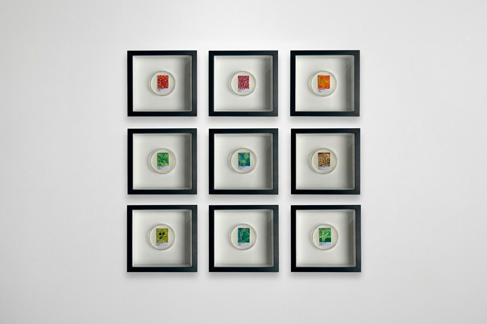

Serigrafía
Serigrafía
Look at the Roses
Serigrafía a dos capas. Trabajo de patterns y actitud.
$30.000 CLP
Flora nativa del sur de Chile, de la microscopía al color.

Muestras del Sur parte de algo que no podemos ver a simple vista: la estructura microscópica de flores, hojas, cortezas, musgos y líquenes del sur de Chile. Recolecté las muestras y la Unidad de Microscopía Electrónica de la Universidad Austral de Chile las procesó. El resultado fueron imágenes en blanco y negro de tejidos, superficies y formas que normalmente pasan inadvertidas.
Esas imágenes son el punto de partida, no el destino. La serie no intenta reproducir lo que muestra el microscopio ni adivinar el color real de esas estructuras: las traduce a pintura y les asigna un color que no tenían. Así, cada pieza propone una nueva relación entre materia, especie y paisaje.
El proyecto se mueve entre tres planos: el territorio, la imagen científica y la interpretación pictórica.
El formato circular de 9 cm cita la placa de Petri, el recipiente donde la ciencia observa y cultiva muestras. Las nueve piezas se ordenan en una matriz de tres por tres, como un muestrario de laboratorio, y la composición se equilibró según el peso visual de cada imagen. La disposición toma prestado el orden de la clasificación científica; la pintura introduce lo subjetivo.
El color es la decisión central. A partir de microfotografías monocromáticas construí paletas diferenciadas por categoría y especie, y las probé en pequeñas muestras tipo Pantone antes de pintar. Juntas, esas paletas forman un sistema cromático del territorio: una forma de leer el paisaje del sur desde sus estructuras más pequeñas.
Una selección de piezas disponibles en ielou.studio.
Serigrafía
Serigrafía a dos capas. Trabajo de patterns y actitud.
$30.000 CLP
 Serigrafía
Serigrafía
Impresión serigráfica de una capa en acrílico negro. Lilium perteneciente a la familia de las Liliaceae.
$25.000 CLP
 Pintura
Pintura
Ejercicio de pinceladas al óleo en papel. Estudio de la sociedad, sus acciones, posturas y edades. Recuerdo visual de la sociedad en época de pandemia, donde se evitó su aglomeración por propagación de virus.
$20.000 CLP
 Grabado
Grabado
Impresión por matriz de plancha offset dibujada a acrílico negro. Iguana y tejido.
$30.000 CLP